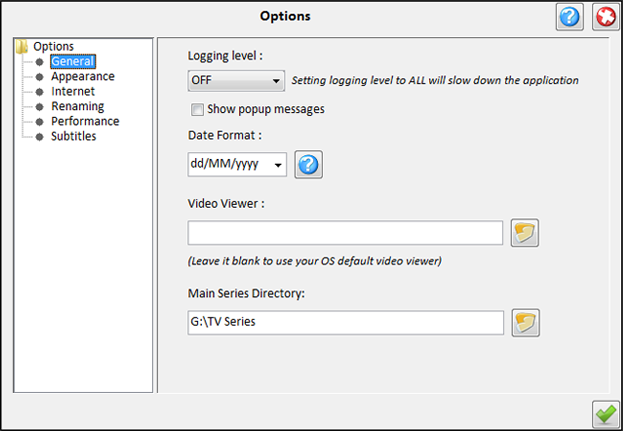

| General Options |
|---|
|  |
|---|
The following options are available:
-
Logging level -
Which kind of messages to report in the MySeries log file.
The levels are OFF (no logging), SEVERE (Fatal errors only),
WARNING(Warnings and higher level errors), ALL (Log Everything).
Note that setting logging to all slows down the application.
-
Date Format -
The format of the application's dates.Click on the question mark for a list of the patterns you
can use.
-
Auto Update - Files :
Auto update video and subtitle status from series directories each time you
select a series.
Auto Update - Extract :
Auto extract archived subtitles (zip, rar,7z,gzip and tar extension)
-
Video viewer -
You can choose the application used for viewing the videos or leave it blank
to use the OS default video viewer.
-
Main Series Directory -
The root folder (or not) of your series. This is the folder where all
File browsers open by default. Also if subtitle files (archived or not) are
saved in this folder they automatically removed to the series folder
where they belong (if series and season can be recognised by their filename).
The files are moved when Update files sction is used.
|